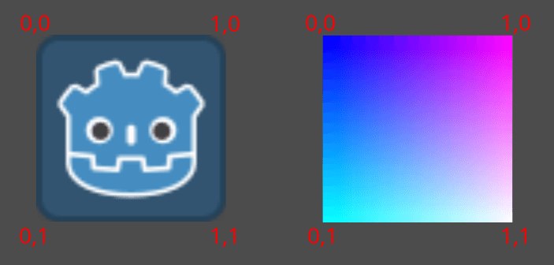

Shader 2D đầu tiên của bạn
Giới thiệu
Shader là những chương trình đặc biệt chạy trên GPU và được dùng để kết xuất đồ họa. Mọi quá trình kết xuất hiện đại đều được thực hiện bằng shader. Để có mô tả chi tiết hơn về shader là gì, xem Shader là gì.
Bài hướng dẫn này sẽ tập trung vào các khía cạnh thực hành của việc viết chương trình shader bằng cách dẫn dắt bạn qua quá trình viết một shader có cả hàm vertex và fragment. Bài hướng dẫn này dành cho người hoàn toàn mới bắt đầu với shader.
Ghi chú
Nếu bạn đã có kinh nghiệm viết shader và chỉ muốn tìm hiểu tổng quan về cách shader hoạt động trong Godot, xem Tham khảo Shading.
Thiết lập
Shader CanvasItem được dùng để vẽ tất cả các đối tượng 2D trong Godot, còn shader Spatial được dùng để vẽ tất cả các đối tượng 3D.
Để dùng một shader, nó phải được gắn vào bên trong một Material, và material đó phải được gắn vào một đối tượng. Material là một loại Resource. Để vẽ nhiều đối tượng với cùng một material, material phải được gắn vào từng đối tượng.
Tất cả các đối tượng kế thừa từ CanvasItem đều có thuộc tính material. Điều này bao gồm tất cả phần tử GUI, Sprite2D, TileMapLayer, MeshInstance2D, v.v. Chúng cũng có tùy chọn kế thừa material của node cha. Điều này hữu ích nếu bạn có nhiều node muốn dùng chung một material.
Để bắt đầu, hãy tạo một node Sprite2D. Bạn có thể dùng bất kỳ CanvasItem nào, miễn là nó vẽ lên canvas, nên trong bài hướng dẫn này chúng ta sẽ dùng Sprite2D, vì đây là CanvasItem dễ nhất để bắt đầu vẽ.
Trong Inspector, nhấp vào bên cạnh "Texture" nơi có ghi "[empty]" và chọn "Load", sau đó chọn "icon.svg". Với dự án mới, đây là biểu tượng Godot. Giờ bạn sẽ thấy biểu tượng trong viewport.
Tiếp theo, nhìn xuống trong Inspector, dưới mục CanvasItem, nhấp vào bên cạnh "Material" và chọn "New ShaderMaterial". Thao tác này tạo một resource Material mới. Nhấp vào hình cầu xuất hiện. Hiện tại Godot chưa biết bạn đang viết CanvasItem Shader hay Spatial Shader nên nó xem trước output của spatial shader. Vì vậy, những gì bạn đang thấy là output của Spatial Shader mặc định.
Ghi chú
Các material kế thừa từ resource class_Material, chẳng hạn như class_StandardMaterial3D và class_ParticleProcessMaterial, có thể được chuyển đổi thành class_ShaderMaterial và các thuộc tính hiện có của chúng sẽ được chuyển thành một shader văn bản đi kèm. Để làm vậy, nhấp chuột phải vào material trong FileSystem dock và chọn Convert to ShaderMaterial. Bạn cũng có thể làm vậy bằng cách nhấp chuột phải vào bất kỳ thuộc tính nào chứa tham chiếu đến material trong inspector.
Nhấp vào bên cạnh "Shader" và chọn "New Shader". Cuối cùng, nhấp vào shader bạn vừa tạo và trình chỉnh sửa shader sẽ mở ra. Giờ bạn đã sẵn sàng bắt đầu viết shader đầu tiên.
Shader CanvasItem đầu tiên của bạn
Trong Godot, mọi shader đều bắt đầu bằng một dòng chỉ định loại shader. Dòng này dùng định dạng sau:
shader_type canvas_item;
Vì chúng ta đang viết shader CanvasItem, chúng ta chỉ định canvas_item ở dòng đầu tiên. Toàn bộ code của chúng ta sẽ nằm bên dưới khai báo này.
Dòng này cho engine biết những biến dựng sẵn và chức năng nào sẽ được cung cấp cho bạn.
Trong Godot, bạn có thể ghi đè ba hàm để điều khiển cách shader hoạt động: vertex, fragment và light. Bài hướng dẫn này sẽ dẫn dắt bạn viết một shader có cả hàm vertex và fragment. Hàm light phức tạp hơn đáng kể so với hàm vertex và fragment nên sẽ không được đề cập ở đây.
Hàm fragment đầu tiên của bạn
Hàm fragment chạy cho mọi pixel trong Sprite2D và xác định pixel đó nên có màu gì.
Chúng bị giới hạn trong các pixel mà Sprite2D bao phủ, nghĩa là bạn không thể dùng nó để, ví dụ, tạo đường viền quanh một Sprite2D.
Hàm fragment cơ bản nhất không làm gì ngoài việc gán một màu duy nhất cho mọi pixel.
Chúng ta làm điều này bằng cách ghi một vec4 vào biến dựng sẵn COLOR. vec4 là cách viết tắt để tạo một vector với 4 số. Để biết thêm thông tin về vector, xem bài hướng dẫn Toán vector. COLOR vừa là biến đầu vào của hàm fragment vừa là output cuối cùng của nó.
void fragment(){
COLOR = vec4(0.4, 0.6, 0.9, 1.0);
}
Xin chúc mừng! Bạn đã hoàn thành. Bạn đã viết thành công shader đầu tiên trong Godot.
Giờ hãy làm mọi thứ phức tạp hơn.
Có nhiều đầu vào của hàm fragment mà bạn có thể dùng để tính COLOR. UV là một trong số đó. Tọa độ UV được chỉ định trong Sprite2D của bạn (mà bạn không hề biết!) và chúng cho shader biết nơi cần đọc từ texture cho mỗi phần của mesh.
Trong hàm fragment, bạn chỉ có thể đọc từ UV, nhưng bạn có thể dùng nó trong các hàm khác hoặc để gán giá trị trực tiếp cho COLOR.
UV thay đổi trong khoảng 0-1 từ trái sang phải và từ trên xuống dưới.

void fragment() {
COLOR = vec4(UV, 0.5, 1.0);
}

Sử dụng biến dựng sẵn TEXTURE
Hàm fragment mặc định đọc từ texture đã đặt cho Sprite2D và hiển thị nó.
Khi muốn điều chỉnh màu trong Sprite2D, bạn có thể điều chỉnh màu từ texture theo cách thủ công như trong code dưới đây.
void fragment(){
// This shader will result in a blue-tinted icon
COLOR.b = 1.0;
}
Một số node, như Sprite2D, có một biến texture riêng có thể truy cập trong shader bằng TEXTURE. Nếu bạn muốn dùng texture của Sprite2D để kết hợp với các màu khác, bạn có thể dùng UV với hàm texture để truy cập biến này. Hãy dùng chúng để vẽ lại Sprite2D với texture.
void fragment(){
COLOR = texture(TEXTURE, UV); // Read from texture again.
COLOR.b = 1.0; //set blue channel to 1.0
}

Đầu vào uniform
Đầu vào uniform được dùng để truyền dữ liệu vào shader, dữ liệu này sẽ giống nhau trên toàn bộ shader.
Bạn có thể dùng uniform bằng cách định nghĩa chúng ở đầu shader như sau:
uniform float size;
Để biết thêm thông tin về cách sử dụng, xem tài liệu Shading Language.
Thêm một uniform để thay đổi lượng màu xanh lam trong Sprite2D của chúng ta.
uniform float blue = 1.0; // you can assign a default value to uniforms
void fragment(){
COLOR = texture(TEXTURE, UV); // Read from texture
COLOR.b = blue;
}
Giờ bạn có thể thay đổi lượng màu xanh lam trong Sprite2D từ trình chỉnh sửa. Hãy nhìn lại Inspector, bên dưới nơi bạn đã tạo shader. Bạn sẽ thấy một mục tên là "Shader Param". Mở mục đó ra và bạn sẽ thấy uniform vừa khai báo. Nếu bạn thay đổi giá trị trong trình chỉnh sửa, nó sẽ ghi đè giá trị mặc định bạn đã cung cấp trong shader.
Tương tác với shader từ code
Bạn có thể thay đổi uniform từ code bằng hàm set_shader_parameter(), được gọi trên resource material của node. Với node Sprite2D, có thể dùng code sau để đặt uniform blue.
var blue_value = 1.0
material.set_shader_parameter("blue", blue_value)
var blueValue = 1.0;
((ShaderMaterial)Material).SetShaderParameter("blue", blueValue);
Lưu ý rằng tên của uniform là một chuỗi. Chuỗi này phải khớp chính xác với cách nó được viết trong shader, bao gồm chính tả và chữ hoa/thường.
Hàm vertex đầu tiên của bạn
Giờ chúng ta đã có hàm fragment, hãy viết một hàm vertex.
Dùng hàm vertex để tính toán vị trí trên màn hình mà mỗi đỉnh sẽ nằm ở đó.
Biến quan trọng nhất trong hàm vertex là VERTEX. Ban đầu, nó chỉ định tọa độ đỉnh trong model của bạn, nhưng bạn cũng ghi vào nó để xác định nơi thực sự vẽ các đỉnh đó. VERTEX là một vec2 ban đầu được biểu diễn trong không gian cục bộ (tức không tương đối với camera, viewport hay các node cha).
Bạn có thể dịch chuyển các đỉnh bằng cách cộng trực tiếp vào VERTEX.
void vertex() {
VERTEX += vec2(10.0, 0.0);
}
Kết hợp với biến dựng sẵn TIME, điều này có thể dùng để tạo hoạt ảnh cơ bản.
void vertex() {
// Animate Sprite2D moving in big circle around its location
VERTEX += vec2(cos(TIME)*100.0, sin(TIME)*100.0);
}
Kết luận
Về cốt lõi, shader làm những gì bạn đã thấy cho đến giờ: chúng tính VERTEX và COLOR. Việc nghĩ ra các chiến lược toán học phức tạp hơn để gán giá trị cho các biến đó là tùy ở bạn.
Để tìm cảm hứng, hãy xem một số bài hướng dẫn shader nâng cao hơn, và xem các trang khác như Shadertoy và The Book of Shaders.